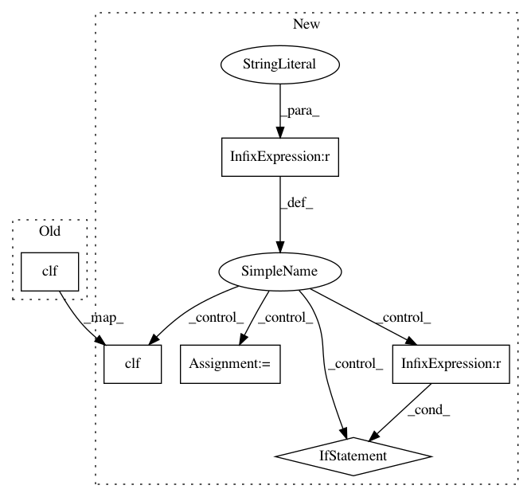

c5ae3a8a16627132a551dd7bcf34e80d277cf2a2,plantcv/plot_hist.py,,plot_hist,#Any#Any#,7
Before Change
// write the figure to current directory
plt.savefig(fig_name)
// close pyplot plotting window
plt.clf()
After Change
from matplotlib import pyplot as plt
// get histogram
if img.dtype=="uint8":
hist = cv2.calcHist([img], [0], None, [256], [0, 255])
bins=range(0,256,1)
if name!=False:
// open pyplot plotting window using hist data
plt.plot(hist)
// set range of x-axis
xaxis = plt.xlim([0, 255])
fig_name = name + ".png"
// write the figure to current directory
plt.savefig(fig_name)
// close pyplot plotting window
plt.clf()
else:
hist, bins = np.histogram(img, bins="auto")
if name!=False:
// open pyplot plotting window using hist data
plt.plot(bins[:-1],hist)
plt.xticks(bins[:-1],rotation="vertical", fontsize=4)
// set range of x-axis
//xaxis = plt.xlim([0, bins.max()])
fig_name = name + ".png"
// write the figure to current directory
plt.savefig(fig_name)
// close pyplot plotting window
plt.clf()
return bins,hist
In pattern: SUPERPATTERN
Frequency: 3
Non-data size: 6
Instances
Project Name: danforthcenter/plantcv
Commit Name: c5ae3a8a16627132a551dd7bcf34e80d277cf2a2
Time: 2016-11-22
Author: mgehan@danforthcenter.org
File Name: plantcv/plot_hist.py
Class Name:
Method Name: plot_hist
Project Name: danforthcenter/plantcv
Commit Name: 4bd9e98e3a538f9ef3676db3f2f3947de138e256
Time: 2017-02-20
Author: maxjfeldman@gmail.com
File Name: plantcv/plot_hist.py
Class Name:
Method Name: plot_hist
Project Name: danforthcenter/plantcv
Commit Name: ab36ba9c62f650a2d61363ce29d5393a686d680c
Time: 2016-04-24
Author: noahfahlgren@gmail.com
File Name: lib/plantcv/analyze_NIR_intensity.py
Class Name:
Method Name: analyze_NIR_intensity